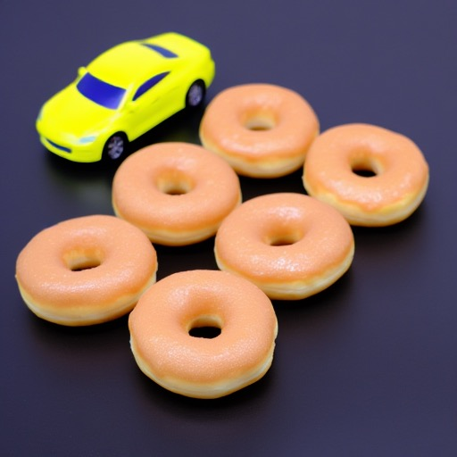

Rectified-flow diffusion transformers condition every denoising step on a single time scalar $t$ shared by all prompt tokens. TokTimer replaces it with a per-token time map $\boldsymbol{\tau}$, so each text token conditions the network at its own effective noise level. Concepts the image has not yet absorbed are held at a “noisier” time and keep receiving denoising effort. No retraining and no new weights; when all token times are equal it reduces exactly to standard CFG.
Text-to-image models built on rectified-flow latent transformers condition each denoising step on a single global time scalar $t_i \in [0,1]$ shared across all prompt tokens. This coupling limits the model’s ability to respond differentially to text tokens whose concepts are underrepresented in the image, contributing to object neglect, attribute mismatching, and counting errors.
We propose TokTimer, an inference-time method that replaces the global scalar $t_i$ with a per-token time map $\boldsymbol{\tau} \in \mathbb{R}^{N_\text{text}}$, feeding each text token at its own effective noise level. At each step, TokTimer updates $\boldsymbol{\tau}$ by gradient descent on a loss that maximizes the classifier-free guidance (CFG) residual magnitude, a differentiable proxy for token influence. The update is stabilized by $\ell_\infty$ normalization, time-proportional scaling, and exponential moving average smoothing; together these encourage $\boldsymbol{\tau}$ to converge to the scheduler time as the trajectory approaches clean data.
TokTimer is weight-preserving: it requires no retraining and is a strict generalization of CFG, recovering it exactly when $\boldsymbol{\tau} = t_i \cdot \mathbf{1}$. We evaluate on Flux2-Klein-4B-Base and Z-Image against standard CFG, Attend-and-Excite, DATE, Make-It-Count, and FRAP across GenEval, GenEval2, Aesthetic Score, CLIP Score, and ImageReward, demonstrating best overall prompt alignment on both backbones while preserving image quality; shared-time, shuffled-offset, and stronger-guidance controls support token-specific allocation.
In diffusion transformers, the time $t$ enters through adaptive layer normalization (adaLN): a sinusoidal embedder and MLP produce $\mathbf{e}(t)$, and a modulation network $\phi$ turns it into the scale, shift and gate parameters of every block. Our key observation is that $\phi$ is a linear map over its last dimension. Feed it a $[B, N_\text{text}, d]$ tensor instead of a $[B, d]$ vector and it returns token-specific modulation coefficients, with no module changes and every pretrained weight untouched. Text token $j$ is then modulated by $\mathbf{e}(\tau_j)$ instead of $\mathbf{e}(t_i)$.
A large $\tau_j$ places a token’s modulation in the regime the network associates with coarse-structure formation. Assigning it to an underrepresented concept biases the network to treat that concept as still needing its large-scale layout, even as the global trajectory has moved on to fine detail.
Illustrative only, for the paper’s motivating prompt “a green apple and a purple banana on a wooden table” at a mid-denoising step. Offsets are exaggerated for visibility (real offsets peak around 0.02). Measured over GenEval, content tokens receive roughly 4–5× the offset of function words.
$\mathcal{L}(\boldsymbol{\tau}) = -\lVert v^+ - v^- \rVert_2^2$, where $v^+ = M(z_i, t_i, \boldsymbol{\tau}, c)$ and $v^- = M(z_i, t_i, t_i\mathbf{1}, \varnothing)$. The residual is the signal guidance amplifies; a concept the trajectory has not absorbed contributes little to it.
$g = \nabla_{\boldsymbol{\tau}} \mathcal{L}$ reuses the activations of the forward pass CFG already runs. The latent is treated as a constant, so there is no backprop through time.
$\delta = -\eta \, t_i \, g / \lVert g \rVert_\infty$ bounds each coordinate by $\eta t_i$, preserves relative magnitudes across tokens, and shrinks to zero as $t_i \to 0$.
$\boldsymbol{\Delta}_i = \alpha \boldsymbol{\Delta}_{i+1} + (1-\alpha)\delta$, and the next step uses $\boldsymbol{\tau} = \mathrm{clamp}(t_{i-1}\mathbf{1} + \boldsymbol{\Delta}_i, 0, 1)$. Default $(\eta, \alpha) = (0.1, 0.9)$.
Per-token times flow through the pretrained embedder and modulation layers.
At the first step $\boldsymbol{\Delta}=\mathbf{0}$, so TokTimer starts on the baseline trajectory.
Offsets peak mid-denoising and decay to under 5% of one scheduler increment by the last step.
Attention methods change where, embedding methods how strongly; TokTimer changes when.
Comparison with five alignment methods on Flux2-Klein-4B-Base and Z-Image ($512 \times 512$, 50 denoising steps, $w = 3.5$). TokTimer achieves the best overall GenEval and GenEval2 scores on both backbones, while keeping or improving image quality. It outperforms Attend-and-Excite on most multi-object tasks and approaches or exceeds Make-It-Count on counting, without being specialized for either.
892 pairwise ratings from 9 participants on GenEval2 prompts (shared seed). Mean net win rate (wins − losses)/$n$ for TokTimer, ± 95% CI, averaged over both backbones. Quality is statistically indistinguishable from every baseline; prompt alignment is a significant win against all five. All 9 participants individually preferred TokTimer for alignment (sign test $p = 0.0039$).
| vs. baseline | Quality | Prompt alignment |
|---|---|---|
| CFG | +0.01 ± 0.06 | +0.22 ± 0.12 |
| Attend-and-Excite | +0.05 ± 0.06 | +0.24 ± 0.13 |
| DATE | +0.05 ± 0.06 | +0.25 ± 0.12 |
| Make-It-Count | +0.04 ± 0.07 | +0.13 ± 0.11 |
| FRAP | +0.06 ± 0.07 | +0.25 ± 0.12 |
TokTimer adds one backward pass per step (about 1.7× CFG latency, the lowest overhead among optimization-based baselines). Giving CFG more steps to match wall-clock time does not close the gap: TokTimer leads at every matched budget on Z-Image.
| Method | Steps | Latency | GenEval | GenEval2 |
|---|---|---|---|---|
| CFG | 50 | 5.14s | 0.686 | 31.8 |
| TokTimer | 29 | 5.10s | 0.693 | 32.1 |
| CFG | 65 | 6.68s | 0.692 | 31.9 |
| TokTimer | 35 | 6.16s | 0.699 | 32.2 |
| CFG | 85 | 8.74s | 0.697 | 32.1 |
| TokTimer | 50 | 8.80s | 0.705 | 32.6 |
On the larger Qwen-Image-2512 backbone, which starts from a much stronger baseline, TokTimer improves or matches CFG in every GenEval and GenEval2 category while preserving quality.
| Benchmark | CFG | TokTimer | $\Delta$ |
|---|---|---|---|
| GenEval overall (image-weighted) | 86.75 | 87.79 | +1.04 |
| GenEval overall (mean of tasks) | 87.20 | 88.19 | +0.99 |
| GenEval color attribution | 77.50 | 79.50 | +2.00 |
| GenEval2 verb | 38.60 | 40.57 | +1.97 |
| GenEval2 count | 64.92 | 65.62 | +0.70 |
GenEval2 prompts from four categories, rendered by all six methods with the same seed. Pick a backbone and a category.
A five-entity cyberpunk noodle-bar prompt: a businesswoman in a red coat, a hooded figure with glowing wrist tattoos, an elderly cyborg with a chrome arm, and a tabby cat eating from a bowl. Removing $t_i$-scaling or $\ell_\infty$ normalization drops a customer entirely; $\ell_2$ normalization or a cosine loss smear colors. Only full TokTimer renders all four customers, including the cat eating from the bowl.
| Variant | GenEval | GenEval2 |
|---|---|---|
| Full TokTimer | 0.705 | 32.6 |
| No $t_i$-scaling | 0.701 | 32.1 |
| No $\ell_\infty$ (raw $g$) | 0.700 | 30.6 |
| $\ell_2$-norm (vs $\ell_\infty$) | 0.703 | 32.1 |
| Cosine loss (vs $\ell_2$) | 0.684 | 31.3 |
| No EMA | 0.486 | 19.4 |
Why each piece matters. $\ell_\infty$ normalization is scale-invariant: it preserves relative gradient magnitudes across tokens while bounding each update by $\eta t_i$; without it a concept gets dropped. $t_i$-scaling stops late offsets from injecting coarse-structure conditioning into the near-clean regime, which destabilizes already-formed concepts. EMA smoothing prevents the offsets from oscillating; without it generation degrades catastrophically (0.486 / 19.4).
“a plastic car and six donuts”, one fixed seed, 18 configurations. As the step size $\eta$ grows, per-token shifts overstep the regime where small offsets act as a coherent signal; as the EMA momentum $\alpha$ shrinks, the offset tracks noisy per-step gradients. The default $(\eta, \alpha) = (0.1, 0.9)$ (green outline) sits in the stable region. Click a cell to inspect it.

Controlled interventions on Z-Image GenEval (553 prompts, one image each, shared seed). A shared adaptive time, optimized with the same loss and compute but one value for all tokens, falls short. Shuffling TokTimer’s offsets across tokens costs 2.4–3.8 percentage points of accuracy. Stronger fixed guidance does not reproduce the gain either. Across benchmarks, neglected objects receive 12–13% larger offsets than realized ones, and content tokens receive about 4–5× the offset of function words.
| Variant | Correct / 553 | Image-weighted | Mean of tasks |
|---|---|---|---|
| CFG, $w = 3.5$ | 384 | .694 | .7015 |
| CFG, $w = 4.5$ | 388 | .702 | .7091 |
| CFG, $w = 5.5$ | 392 | .709 | .7185 |
| Fixed uniform $+0.02$ shift | 385 | .696 | .7040 |
| Shared adaptive time | 390 | .705 | .7150 |
| Shuffled offsets, draw 1 | 373 | .675 | .6858 |
| Shuffled offsets, draw 2 | 381 | .689 | .6989 |
| TokTimer, $w = 3.5$ | 394 | .712 | .7229 |
Because TokTimer only replaces the global time scalar with $\boldsymbol{\tau}$, it can be layered on top of other methods without touching their objectives or hyperparameters. In a preliminary experiment on Z-Image GenEval, adding TokTimer improves DATE by 2.1 points and FRAP by 3.9 points overall; FRAP + TokTimer surpasses every individual method.
| Method | Overall | Counting | Color attr | Two obj |
|---|---|---|---|---|
| DATE | 0.682 | 0.616 | 0.548 | 0.859 |
| DATE + TokTimer | 0.703 | 0.700 | 0.560 | 0.869 |
| FRAP | 0.681 | 0.591 | 0.553 | 0.861 |
| FRAP + TokTimer | 0.720 | 0.663 | 0.600 | 0.879 |
@article{hazan2026toktimer, title = {TokTimer: Per-Token Denoising Time for Enhanced Prompt Alignment in Flow-Matching Diffusion Models}, author = {Hazan, Itay and Wolf, Lior}, journal = {arXiv preprint arXiv:XXXX.XXXXX}, year = {2026} }